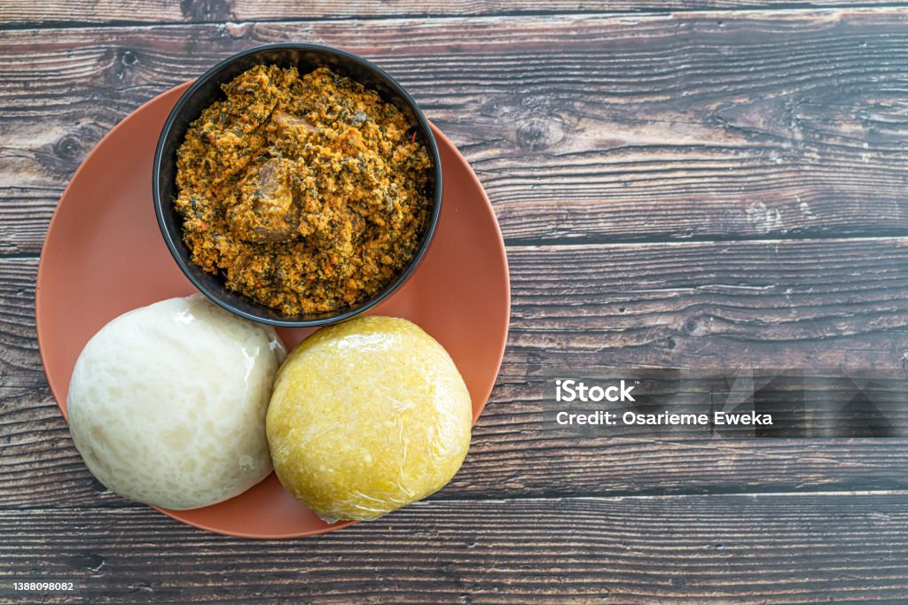

Description
Egusi soup is a delicious West African dish made with melon seeds, leafy vegetables, and meat or fish. It is a staple in Nigerian cuisine and known for its rich flavor and hearty texture.
This traditional soup is perfect for any occasion and can be enjoyed with pounded yam, fufu, or rice. Follow the steps below to create an authentic and flavorful Egusi soup.
Ingredients
- 1 cup ground egusi (melon seeds)
- 500g assorted meats (beef, tripe, etc.)
- 200g smoked fish
- 1 cup spinach or bitterleaf, chopped
- 1/2 cup palm oil
- 1 onion, finely chopped
- 2 tablespoons ground crayfish
- 3-4 cups stock or water
- 2-3 bouillon cubes (Maggi or Knorr)
- Salt and pepper to taste
Steps
- Heat the palm oil in a large pot over medium heat.
- Add the chopped onions and sauté until translucent.
- Add the assorted meats and cook until browned.
- Add the ground crayfish and cook for another 2 minutes.
- Pour in the stock or water, add the bouillon cubes, and bring to a boil.
- Reduce the heat and simmer until the meat is tender.
- In a bowl, mix the ground egusi with a little water to form a paste.
- Add the egusi paste to the pot in small scoops, stirring gently to avoid lumps.
- Let the soup cook for about 10-15 minutes, stirring occasionally.
- Add the smoked fish and chopped spinach or bitterleaf, and cook for an additional 5-7 minutes.
- Season with salt and pepper to taste.
- Serve hot with pounded yam, fufu, or rice. Enjoy your Egusi soup!